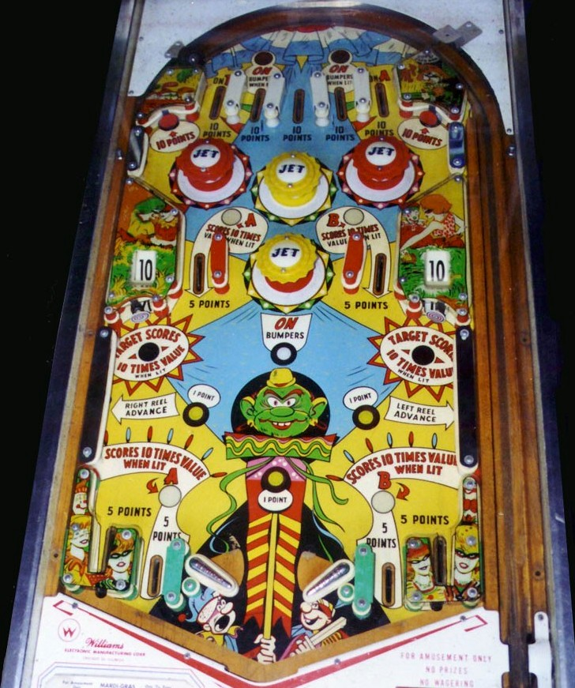

There are 5 top lanes, which always score 10 points. The leftmost and rightmost lanes light the letters A and B respectively; collecting A lights the middle left lane and left out lane for 50 points instead of 5, while collecting B does the same on the right. The second and fourth top lanes are lit alternately for On Bumpers based on 1-point switch hits. The center top lane has no extra scoring features.
Pop bumpers score 1 point or 10 when lit. The standup targets in the upper corners also score 10 points. Once the bumpers are lit, they remain lit for the rest of the ball. The rollover just below the lowest bumper always turns the bumpers on.
The side wall switches in the lower left and lower right advance the reels next to the middle right and middle left standup targets respectively. These reels can read 10, 20, or 30, and the nearby targets give the displayed score when lit. One of these targets is lit at a time, alternating based on 1-point switch hits, and a lit target scores 10x value (100, 200, or 300 points).
There are 4 lanes at the bottom of the table. The lanes closer to the flippers are out lanes, which score 5 points or 50 when lit; they are lit by collecting A (left) or B (right) from the top lanes. The outer bottom lanes are kickers, which always score 5 points and fling the ball up towards one of the reel standup targets. Watch the feed closely from the middle set of rollover lanes, as it's not unusualy for a ball through one of these to fall directly down into an out lane.
There is no extra ball feature or end of ball bonus. Tilt ends game, but only for the player who tilted in a multiplayer game.
The below picture of Mardi Gras' playfield was taken from the Internet Pinball Database, where it was originally provided by Tim Brady.
